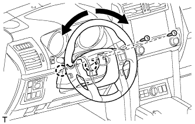
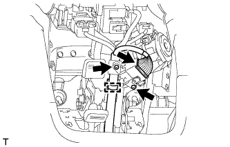

ЗАМОК ЗАЖИГАНИЯ > СНЯТИЕ |
| 1. REMOVE LOWER STEERING COLUMN COVER |
Remove the 2 screws.
|  |
Detach the 2 claws and remove the lower steering column cover.
| 2. REMOVE IGNITION SWITCH ASSEMBLY |
|  |
Disconnect the ignition switch connector and detach the wire harness clamp.
Remove the 2 screws and ignition switch.